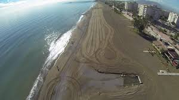
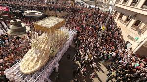

Bienvenido a Málaga
La perla del Mediterráneo
Lo que busques, lo encontrarás en Málaga
¿Date un paseo!LA PERLA DEL MEDITERRÁNEO


LA CIUDAD DE MÁLAGA
Fundada por los fenicios en el siglo VIII a. C., lo que la convierte en una de las ciudades más antiguas de Europa. Durante el siglo XIX la ciudad experimentó una destacable actividad industrial y revolucionaria que la situó como primera ciudad industrial de España y la hicieron merecedora de los títulos «Siempre denodada» y «La primera en el peligro de la libertad». Protagonista de la explosión del boom turístico de las décadas de 1960 y 1970, Málaga constituye en la actualidad un notable centro de entretenimiento, económico y cultural, y un importante nodo de comunicaciones en el litoral mediterráneo.
PLAYAS DE MÁLAGA
Fundada por los fenicios en el siglo VIII a. C., lo que la convierte en una de las ciudades más antiguas de Europa. Durante el siglo XIX la ciudad experimentó una destacable actividad industrial y revolucionaria que la situó como primera ciudad industrial de España y la hicieron merecedora de los títulos «Siempre denodada» y «La primera en el peligro de la libertad». Protagonista de la explosión del boom turístico de las décadas de 1960 y 1970, Málaga constituye en la actualidad un notable centro de entretenimiento, económico y cultural, y un importante nodo de comunicaciones en el litoral mediterráneo.